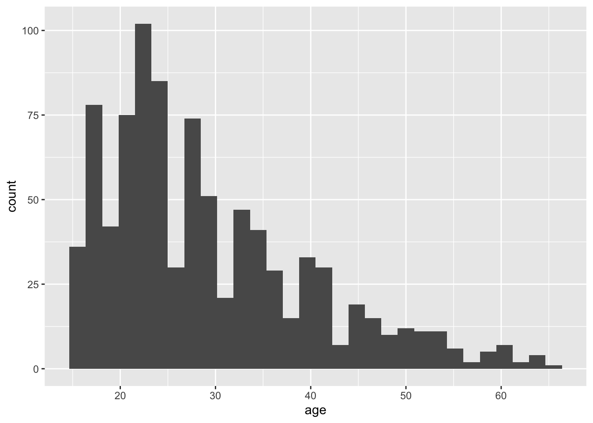
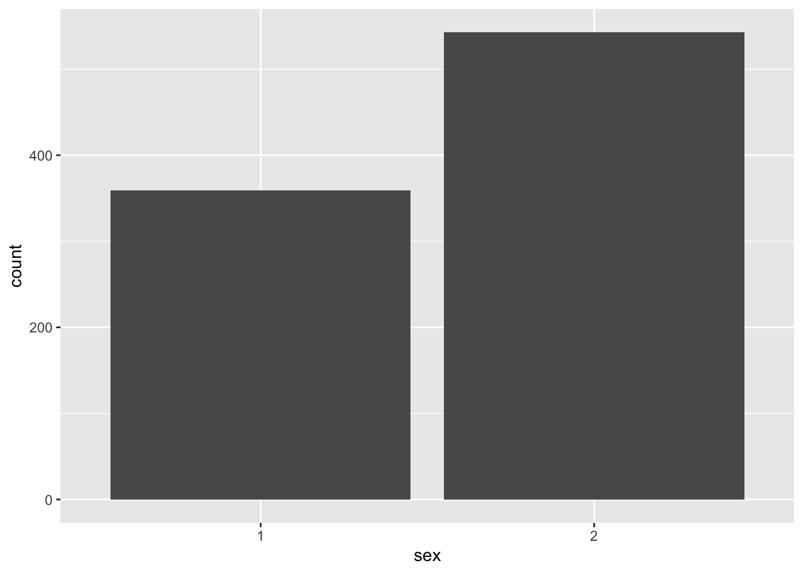
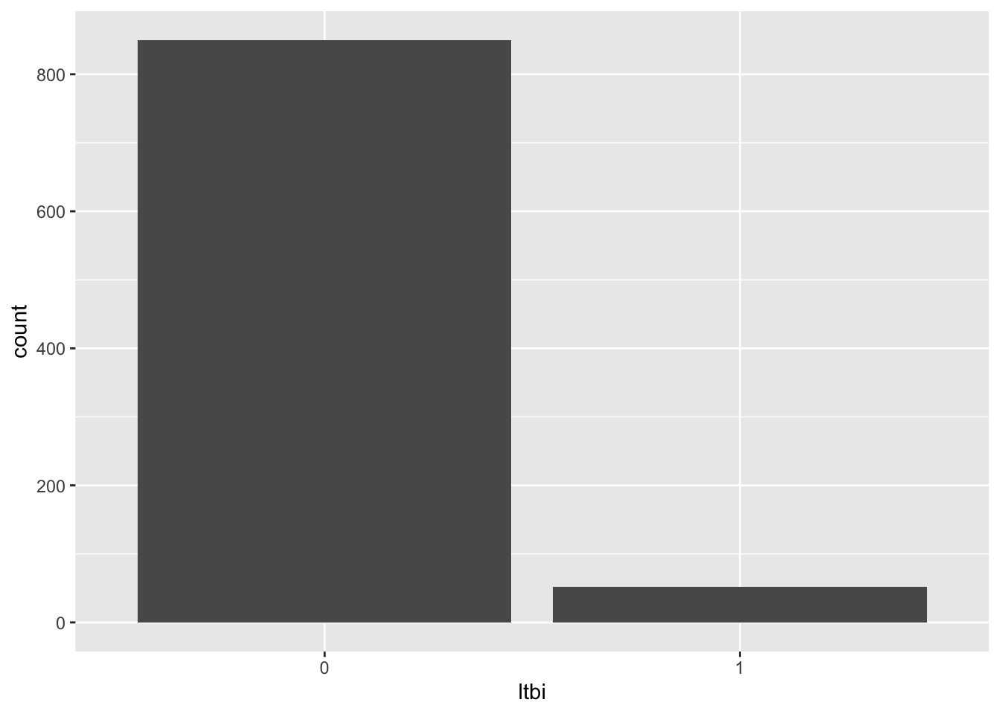
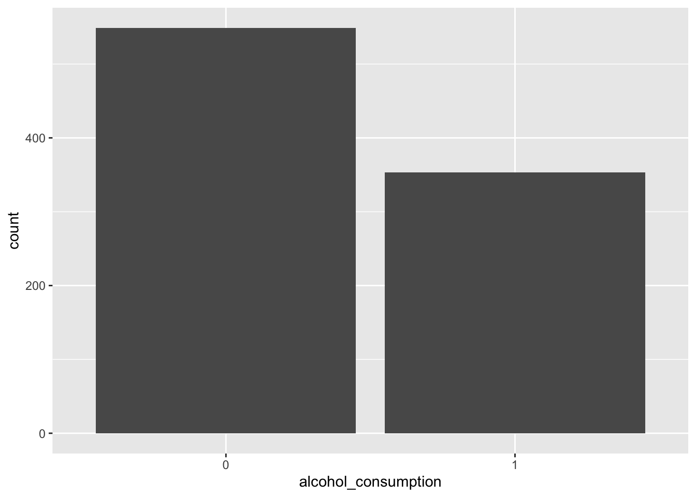
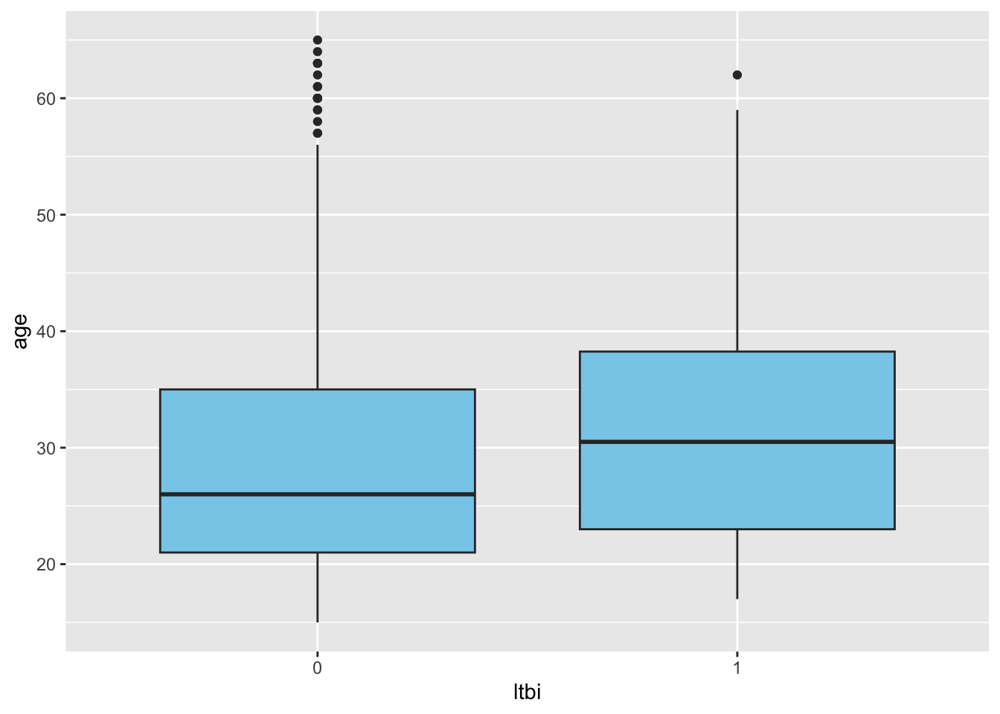

#load needed packages. make sure they are installed.
#Loading the libraries I might need
defaultW <- getOption("warn")
options(warn = -1)
suppressMessages(library(here))#for data loading/saving
suppressMessages(library(skimr))
suppressMessages(library(dplyr))
suppressMessages(library(tidyr))
suppressMessages(library(tidyverse))
suppressMessages(library(Hmisc))
suppressMessages(library(DescTools))
suppressMessages(library(table1))
suppressMessages(library(ggplot2))
suppressMessages(library(data.table))
suppressMessages(library(haven))
suppressMessages(library(ggpubr))
suppressMessages(library(psych))
suppressMessages(library(mosaic))
suppressMessages(library(survival))
suppressMessages(library(survminer))
suppressMessages(library(readxl))
suppressMessages(library(readr))
suppressMessages(library(flextable))
options(warn = defaultW)Assessing of the relationship between Alcohol consumption and Latent TB in Kampala, Uganda
Data cleaning and exploring.
Load the data.
#Path to data. Note the use of the here() package and not absolute paths
data_location <- here::here("data","processed_data","processeddata.rds")
#load data
# Loading the needed datasets
madaproject <- read_excel("~/OneDrive - University of Georgia/Documents/CLASSES-PHD/SEM2 YEAR 1/EPID8060E/part 2 MADA/data_patrick.xlsx")New names:
• `` -> `...18`tst <- read_csv("~/OneDrive - University of Georgia/Documents/CLASSES-PHD/SEM2 YEAR 1/EPID8060E/part 2 MADA/TST_Placement.csv")Warning: One or more parsing issues, call `problems()` on your data frame for details,
e.g.:
dat <- vroom(...)
problems(dat)Rows: 7480 Columns: 31
── Column specification ────────────────────────────────────────────────────────
Delimiter: ","
chr (13): from, Time_Stamp, participantid, visittype, tst1a_specify, tst1b,...
dbl (10): tst1a, tst2a, tst2b, tst3a_locate, tst3b_locate, tst3c_locate, ts...
lgl (1): tst4a_specify
date (7): tst2c, tst3a_date, tst3b_date, tst3c_date, tst4c, tst_compdate, I...
ℹ Use `spec()` to retrieve the full column specification for this data.
ℹ Specify the column types or set `show_col_types = FALSE` to quiet this message.Data cleaning & manipulation
# First, remove duplicates from the tst dataset based on the participant ID then also merge the variable HIV status
tst_unique <- tst %>%
distinct(participantid, .keep_all = TRUE) %>%
select(participantid, tst2b)
# Now merge the madaproject dataset with tst_unique based on participant ID
merged_data <- left_join(madaproject, tst_unique, by = "participantid")
dim(merged_data)[1] 902 29head(merged_data)# A tibble: 6 × 29
participantid result0 collection_date0 result3 collection_date3 result6
<chr> <chr> <chr> <chr> <chr> <chr>
1 C50202 NEGATIVE 44295 NEGATIVE 44393 POSITIVE
2 C50206 NEGATIVE 44295 NEGATIVE 44393 NEGATIVE
3 C50209 NEGATIVE 44295 NEGATIVE 44393 NEGATIVE
4 C50212 NEGATIVE 44295 NEGATIVE 44393 NEGATIVE
5 C50215 NEGATIVE 44295 NEGATIVE 44393 NEGATIVE
6 C50222 NEGATIVE 44295 NEGATIVE 44393 NEGATIVE
# ℹ 23 more variables: collection_date6 <chr>, result9 <chr>,
# collection_date9 <chr>, result12 <chr>, collection_date12 <chr>,
# result15 <chr>, collection_date15 <chr>, result18 <chr>,
# collection_date18 <chr>, result21 <chr>, collection_date21 <chr>,
# ...18 <lgl>, result24 <chr>, collection_date24 <chr>, age_yrs <chr>,
# sex <dbl>, enr_compdate <dttm>, convertor <chr>, inc <dbl>,
# conv_date <chr>, last_date <dttm>, Drinkst1tus <dbl>, tst2b <dbl># Select specific variable of interest and create final dataset for analysis
finaldata <- merged_data %>%
select(sex, inc, age_yrs, Drinkst1tus, tst2b, enr_compdate, last_date)Now I will review the final dataset
head(finaldata)# A tibble: 6 × 7
sex inc age_yrs Drinkst1tus tst2b enr_compdate last_date
<dbl> <dbl> <chr> <dbl> <dbl> <dttm> <dttm>
1 1 1 35 1 2 2021-04-09 00:00:00 2021-10-06 00:00:00
2 2 1 37 1 2 2021-04-09 00:00:00 2023-04-05 00:00:00
3 1 0 20 1 2 2021-04-09 00:00:00 2023-04-05 00:00:00
4 2 0 23 1 2 2021-04-09 00:00:00 2023-04-11 00:00:00
5 1 0 23 1 2 2021-04-09 00:00:00 2023-04-05 00:00:00
6 2 1 22 0 2 2021-04-09 00:00:00 2022-07-04 00:00:00colnames(finaldata)[1] "sex" "inc" "age_yrs" "Drinkst1tus" "tst2b"
[6] "enr_compdate" "last_date" Now I will rename variables in the data and create new variables
# Rename columns in finaldata based on the provided vector of new names
finaldata <- finaldata %>%
rename(
ltbi = inc,
age = age_yrs,
alcohol_consumption = Drinkst1tus,
hiv_status = tst2b,
enrollment_date = enr_compdate,
conversion_date = last_date
)
colnames(finaldata)[1] "sex" "ltbi" "age"
[4] "alcohol_consumption" "hiv_status" "enrollment_date"
[7] "conversion_date" Now I will check for missingness in the data
Now I will check for the class of all the variables
class(finaldata$age)[1] "character"class(finaldata$sex)[1] "numeric"class(finaldata$ltbi)[1] "numeric"class(finaldata$alcohol_consumption)[1] "numeric"class(finaldata$hiv_status)[1] "numeric"class(finaldata$enrollment_date)[1] "POSIXct" "POSIXt" class(finaldata$conversion_date)[1] "POSIXct" "POSIXt" Now I will set variable to the right class
# Convert age to numeric
finaldata$age <- as.numeric(finaldata$age)Warning: NAs introduced by coercion# Convert sex, ltbi, alcohol_consumption, and hiv_status to factors
finaldata$sex <- as.factor(finaldata$sex)
finaldata$ltbi <- as.factor(finaldata$ltbi)
finaldata$alcohol_consumption <- as.factor(finaldata$alcohol_consumption)
finaldata$hiv_status <- as.factor(finaldata$hiv_status)
# Convert enrollment_date and conversion_date to dates
finaldata$enrollment_date <- as.Date(finaldata$enrollment_date, format = "%Y-%m-%d")
finaldata$conversion_date <- as.Date(finaldata$conversion_date, format = "%Y-%m-%d")# I will look again at the class to see if they are as defined.
class(finaldata$age)[1] "numeric"class(finaldata$sex)[1] "factor"class(finaldata$ltbi)[1] "factor"class(finaldata$alcohol_consumption)[1] "factor"class(finaldata$hiv_status)[1] "factor"class(finaldata$enrollment_date)[1] "Date"class(finaldata$conversion_date)[1] "Date"Data exploration through tables
Showing a bit of code to produce and save a summary table.
summary_df = skimr::skim(finaldata)
print(summary_df)── Data Summary ────────────────────────
Values
Name finaldata
Number of rows 902
Number of columns 7
_______________________
Column type frequency:
Date 2
factor 4
numeric 1
________________________
Group variables None
── Variable type: Date ─────────────────────────────────────────────────────────
skim_variable n_missing complete_rate min max median
1 enrollment_date 0 1 2021-04-09 2023-01-16 2022-04-07
2 conversion_date 0 1 2021-07-22 2025-05-11 2023-05-24
n_unique
1 101
2 215
── Variable type: factor ───────────────────────────────────────────────────────
skim_variable n_missing complete_rate ordered n_unique
1 sex 0 1 FALSE 2
2 ltbi 0 1 FALSE 2
3 alcohol_consumption 0 1 FALSE 2
4 hiv_status 14 0.984 FALSE 4
top_counts
1 2: 543, 1: 359
2 0: 850, 1: 52
3 0: 549, 1: 353
4 2: 784, 9: 61, 1: 41, 3: 2
── Variable type: numeric ──────────────────────────────────────────────────────
skim_variable n_missing complete_rate mean sd p0 p25 p50 p75 p100 hist
1 age 1 0.999 29.4 10.7 15 21 27 35 65 ▇▅▂▁▁# save to file
summarytable_file = here("results", "summarytable.rds")
saveRDS(summary_df, file = summarytable_file)Data exploration through figures
p1 <- finaldata %>% ggplot(aes(x=age)) + geom_histogram()
plot(p1)`stat_bin()` using `bins = 30`. Pick better value with `binwidth`.Warning: Removed 1 rows containing non-finite values (`stat_bin()`).
figure_file = here("results","age_distribution.png")
ggsave(filename = figure_file, plot=p1) Saving 7 x 5 in image
`stat_bin()` using `bins = 30`. Pick better value with `binwidth`.Warning: Removed 1 rows containing non-finite values (`stat_bin()`).# Bar plot for Sex
p2 <- finaldata %>% ggplot(aes(x=sex)) + geom_bar()
plot(p2)
figure_file = here("results","sex_distribution.png")
ggsave(filename = figure_file, plot=p2) Saving 7 x 5 in image# Bar plot for TB Infection
p3 <- finaldata %>% ggplot(aes(x=ltbi)) + geom_bar()
plot(p3)
figure_file = here("results","ltbi_distribution.png")
ggsave(filename = figure_file, plot=p3)Saving 7 x 5 in image# Bar plot for alcohol consumption
p4 <- finaldata %>% ggplot(aes(x=alcohol_consumption)) + geom_bar()
plot(p4)
figure_file = here("results","alcohol consumption_distribution.png")
ggsave(filename = figure_file, plot=p4)Saving 7 x 5 in image# Box plot between age and ltbi
p5 <- finaldata %>% ggplot(aes(x=ltbi, y=age)) + geom_boxplot(fill = "skyblue")
plot(p5)Warning: Removed 1 rows containing non-finite values (`stat_boxplot()`).
figure_file = here("results","ltbi_age.png")
ggsave(filename = figure_file, plot=p5) Saving 7 x 5 in imageWarning: Removed 1 rows containing non-finite values (`stat_boxplot()`).# Stacked bar plot between ltbi and alcohol_consumption
p6 <- finaldata %>% ggplot(aes(x=alcohol_consumption, fill = ltbi)) + geom_bar(position = "stack")
plot(p6)figure_file = here("results","alcohol consumption_ltbi_stacked.png")
ggsave(filename = figure_file, plot=p6) Saving 7 x 5 in imageCreating categorical value of age
#Creating age categories
finaldata <- finaldata %>% mutate(agecat = ifelse(age >= 0 & age <= 20, 0,
ifelse( age> 20 & age <= 40, 1,
ifelse(age > 40 , 2,
ifelse(age > 60, 3, NA))))) # Create the table
# Subset the first 10 rows of finaldata
subset_data <- finaldata[1:10, ]
# Convert to flextable
flex_table <- flextable(subset_data)
flex_table sex | ltbi | age | alcohol_consumption | hiv_status | enrollment_date | conversion_date | agecat |
|---|---|---|---|---|---|---|---|
1 | 1 | 35 | 1 | 2 | 2021-04-09 | 2021-10-06 | 1 |
2 | 1 | 37 | 1 | 2 | 2021-04-09 | 2023-04-05 | 1 |
1 | 0 | 20 | 1 | 2 | 2021-04-09 | 2023-04-05 | 0 |
2 | 0 | 23 | 1 | 2 | 2021-04-09 | 2023-04-11 | 1 |
1 | 0 | 23 | 1 | 2 | 2021-04-09 | 2023-04-05 | 1 |
2 | 1 | 22 | 0 | 2 | 2021-04-09 | 2022-07-04 | 1 |
1 | 0 | 25 | 1 | 2 | 2021-04-12 | 2023-04-26 | 1 |
1 | 0 | 21 | 1 | 2 | 2021-04-12 | 2023-04-05 | 1 |
1 | 0 | 20 | 1 | 2 | 2021-04-12 | 2022-10-07 | 0 |
1 | 0 | 31 | 1 | 2 | 2021-04-12 | 2023-04-05 | 1 |